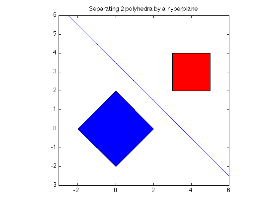

% Boyd & Vandenberghe "Convex Optimization" % Joelle Skaf - 10/09/05 % (a figure is generated) % % If the two polyhedra C = {x | A1*x <= b1} and D = {y | A2*y <= b2} can be % separated by a hyperplane, it will be of the form % z'*x - z'*y >= -lambda'*b1 - mu'*b2 > 0 % where z, lambda and mu are the optimal variables of the problem: % maximize -b1'*lambda - b2'*mu % s.t. A1'*lambda + z = 0 % A2'*mu - z = 0 % norm*(z) <= 1 % lambda >=0 , mu >= 0 % Note: here x is in R^2 % Input data randn('seed',0); n = 2; m = 2*n; A1 = [1 1; 1 -1; -1 1; -1 -1]; A2 = [1 0; -1 0; 0 1; 0 -1]; b1 = 2*ones(m,1); b2 = [5; -3; 4; -2]; % Solving with CVX fprintf(1,'Finding a separating hyperplane between the 2 polyhedra...'); cvx_begin variables lam(m) muu(m) z(n) maximize ( -b1'*lam - b2'*muu) A1'*lam + z == 0; A2'*muu - z == 0; norm(z) <= 1; -lam <=0; -muu <=0; cvx_end fprintf(1,'Done! \n'); % Displaying results disp('------------------------------------------------------------------'); disp('The distance between the 2 polyhedra C and D is: ' ); disp(['dist(C,D) = ' num2str(cvx_optval)]); % Plotting t = linspace(-3,6,100); p = -z(1)*t/z(2) + (muu'*b2 - lam'*b1)/(2*z(2)); figure; fill([-2; 0; 2; 0],[0;2;0;-2],'b', [3;5;5;3],[2;2;4;4],'r') axis([-3 6 -3 6]) axis square hold on; plot(t,p) title('Separating 2 polyhedra by a hyperplane');
Finding a separating hyperplane between the 2 polyhedra... Calling sedumi: 12 variables, 5 equality constraints ------------------------------------------------------------ SeDuMi 1.21 by AdvOL, 2005-2008 and Jos F. Sturm, 1998-2003. Alg = 2: xz-corrector, Adaptive Step-Differentiation, theta = 0.250, beta = 0.500 eqs m = 5, order n = 12, dim = 13, blocks = 2 nnz(A) = 18 + 0, nnz(ADA) = 25, nnz(L) = 15 it : b*y gap delta rate t/tP* t/tD* feas cg cg prec 0 : 1.26E+01 0.000 1 : -1.46E+00 4.21E+00 0.000 0.3333 0.9000 0.9000 2.47 1 1 2.1E+00 2 : -2.14E+00 4.21E-01 0.000 0.1000 0.9900 0.9900 1.34 1 1 1.9E-01 3 : -2.12E+00 2.81E-02 0.000 0.0668 0.9900 0.9900 1.03 1 1 1.2E-02 4 : -2.12E+00 2.77E-03 0.019 0.0986 0.9900 0.9900 1.00 1 1 1.3E-03 5 : -2.12E+00 8.19E-06 0.000 0.0030 0.9990 0.9990 1.00 1 1 3.8E-06 6 : -2.12E+00 2.62E-07 0.000 0.0320 0.9900 0.9900 1.00 1 1 1.4E-07 7 : -2.12E+00 1.11E-08 0.210 0.0422 0.9900 0.5465 1.00 1 2 1.6E-08 8 : -2.12E+00 1.66E-10 0.000 0.0150 0.9902 0.9900 1.00 2 2 3.9E-10 iter seconds digits c*x b*y 8 0.1 Inf -2.1213203424e+00 -2.1213203423e+00 |Ax-b| = 2.0e-11, [Ay-c]_+ = 1.3E-09, |x|= 1.9e+00, |y|= 3.9e+00 Detailed timing (sec) Pre IPM Post 0.000E+00 5.000E-02 0.000E+00 Max-norms: ||b||=1, ||c|| = 5, Cholesky |add|=0, |skip| = 0, ||L.L|| = 2163.65. ------------------------------------------------------------ Status: Solved Optimal value (cvx_optval): +2.12132 Done! ------------------------------------------------------------------ The distance between the 2 polyhedra C and D is: dist(C,D) = 2.1213
